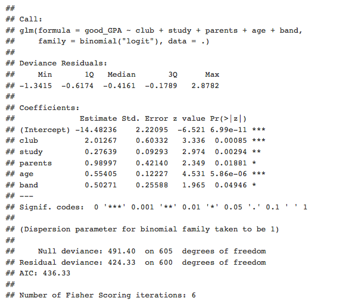
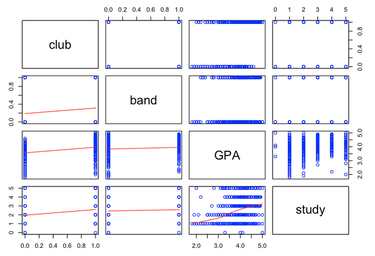
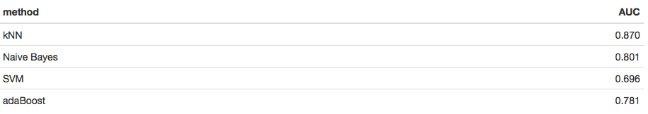

Project Overview Analysis Conclusion
Authors and Contributors: Joseph Kintzel, Bernard Mcshea, Vishal Kapoor
Links:
Video View Project on GitHub Project R Markdown Project HTML Project DataProject Overview
Motivation:
- Can student data collected in a survey be used to classify a student's academic achievement potential?
- Can we predict a student's Grade Point Average?
- Can we identify potentially gifted students?
- Can we identify potentially at-risk students?
- Is all, some, or none of the collected data useful in answering these questions?
Seeking efficiency in the pursuit of education is a perpetual goal. We wish to investigate the effects of extracurricular activities and family dynamics on a student's GPA score. First, we recognize there are many factors that can correlate with a student's GPA that might not cause the GPA to be high or low. Therefore, we must investigate cautiously. The goal would be to find an optimal combination of factors that could predict the GPA of a student.
A secondary use would be for a screening tool for colleges to determine which students would perform the best, using a predictive model or machine learning to remove some human bias.
Our data:
We used data collected from a student survey given to students at a suburban Indiana High School. Students were asked to rate themselves on many different factors. Some of these included study time, participation in sports/clubs/music, working hours, and reading/gaming hours.
Analysis
We used Linear Regression to try to predict a student's GPA. We also used Logistic Regression to try to predict the best students, and several machine learning techniques to attempt to classify students as "at-risk."
Linear and Logistic Regression:
Linear regression left us with over 75% of the error of the model unaccounted for, that and a few other reasons lead us to move to Logistic Regression. We defined a good GPA as the top 16% of students. More technically, a good GPA is one standard deviation above the mean.
Can we predict high achievers from the data?
We used a generalized linear model (glm) with a logit link function. After many tests, we developed the following model: Good_GPA ~ number of clubs + hours of study + parents marital status + age + band.
Clearly the marital status of one's parents and the student's age is not within a students control. However, if they had chosen to join a club, that would increase their odds of having a good_GPA by a factor of 7.483. If a student joined band, their odds of having a good_GPA increase by a factor of 1.653. Every additional hour a student studies increases their odds of a good_GPA by a factor of 1.318.
A school application showing a student that spends lots of time studying or a student in a club or a musically inclined student that joined band has higher odds of also showing a good GPA. These factors would make them a better candidate for acceptance. This could be one aspect of predicting if a student would do well at their next academic institution.
Further work would be to have an additional survey of more then one high school and include more questions about the type of club and the time they invest in it. The club predictor seems to substantially increase a student's odds of a good_GPA.
Covariance and Correlation:
We have thus far focused on logistic relationships, which look at what often happens with one variable given another variable (odds). In contrast a linear relationship is a direct relationship between variables. Looking at covariance and correlation, we see that there is no significant linear relationship established between GPA and club/parents/study. The various tests performed above for correlation did not prove any noticeable linear relationship. Thus reaffirming our move to Logistic Regression
Machine Learning:
Changing our approach slightly, we looked to see if Machine Learning could find a way to identify and predict if a student was at_risk which we define as one standard deviation below the mean. Using KNN we found that the number of hours playing games, the number of friends, and the number of songs (or hours spent listening to songs) where the three biggest predictors for a student being at_risk. Having a number of factors in the model would enable a school advisor to see if a student could potentially be at_risk and recommend some different activities. An at-risk student is in the bottom 16% or one standard deviation below the mean.
Could machine learning techniques be used to classify students?
For this analysis we will focus on the at-risk students. We tried several different machine learning algorithms and tasked them with classifying our students. We used an 80/20 split for training and testing data.
Using pure accuracy as a guide:
K-Nearest Neighbors with k=8 was strong. As was adaBoost, a 'boosting' algorithm used along with recursive trees.
ROC Curve comparison:
Using AUC (Area Under the Curve) gives us a better idea of the overall comparisons:
In this case kNN (8) separates itself as the best algorithm.
Conclusion
With the model we must remember that correlation is not causation. If a student is in a club then the odds of their GPA going up increase by a factor of 7.483. That does not mean any student could join a club and their GPA would increase by that factor.
We were able to discover factors (clubs, time spent studying, if their parents are married, their age, band) that were correlated to good_GPAs. With machine learning we were able to predict at-risk students with an accuracy of 87%.